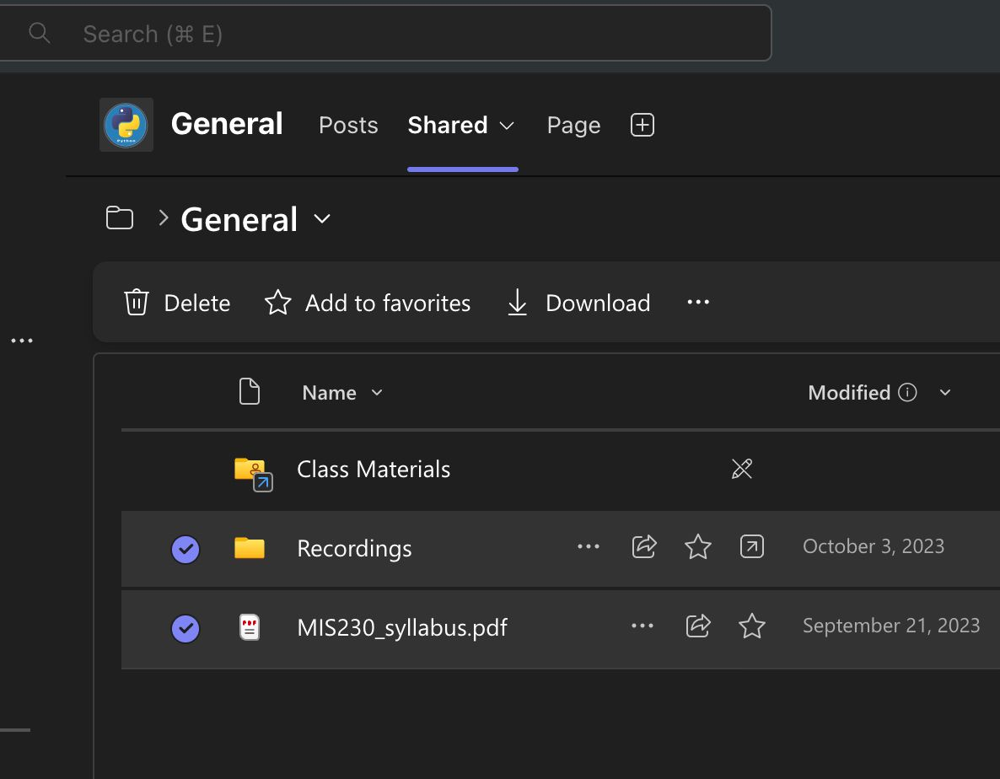

Start here (Urgent action before Wednesday, 25/11/2026)
- Check which Teams are affected
Automatic deletion on Wednesday, 25/11/2026 applies only to Class Teams older than 3 years. Newer Class Teams, department Teams, and committee Teams are not included in this purge. Scope details
- Download your files before the deadline
Open the Class Team → Shared (or Files) tab → select folders/files (or click the select-all circle next to Name) and click Download (
.zip), or copy them to your personal OneDrive via SharePoint. Backup steps - Export OneNote & Grades separately
Class Notebooks (OneNote) and Assignments/Grades are not included in a Files
.zipdownload and must be exported separately. How to export - Notice for Alumni: OneDrive removal 1 year after graduation
Under the approved policy, alumni OneDrive storage is set to 0 GB and all OneDrive data is automatically deleted 1 year after graduation. Quotas table
Policy & Deletion Scope
These rules implement University Council Decision No. 1/2026 (dated 22/04/2026) governing the Microsoft 365 Storage Capacity Rationalization Policy at Kuwait University.
Which Teams will be deleted on 25/11/2026, and will this repeat?
Automatic deletion applies to Class Teams older than 3 years—specifically Teams created using the Microsoft Teams Education Class template.
Following the initial cleanup on 25/11/2026, Class Teams older than 3 years will continue to be purged on a rolling basis per University policy. Under the policy, Moodle is the canonical platform for course archiving, while Teams is a temporary collaboration tool during the semester.
Are department, committee, or administrative Teams affected?
Not in the 25/11/2026 purge. The current automated cleanup applies strictly to Class Teams older than 3 years.
Separately, under the approved policy, non-academic work groups and committee Teams are subject to automatic deletion after 1 year of inactivity, with Team owners notified 3 months in advance.
How can I check if a Class Team is older than 3 years?
- Check the semester code in the Team name (e.g.,
2022/2023,2023-1, or earlier) or the date of the earliest posts in the General channel. - You can also open the Shared (or Files) tab and click Open in SharePoint to inspect folder creation dates.
If you are unsure about the age of any Class Team containing important materials, back it up immediately.
Can deleted Class Team files be recovered after 25/11/2026?
Important: Deletion of Class Teams older than 3 years on 25/11/2026 should be treated as permanent and irreversible. Please download or copy all important course materials and recordings before the deadline.
Why is Kuwait University enforcing Team cleanup and storage quotas?
Microsoft Teams, SharePoint, and OneDrive share a single university-wide Microsoft 365 tenant storage pool that reached near-100% capacity. Retaining thousands of inactive Class Teams and expired accounts puts core digital services at risk for the entire University.
Backing Up Teams & SharePoint Files
Choose the method that best fits your file size. For large or video-heavy courses, cloud-to-cloud copying to OneDrive via SharePoint is faster than downloading a ZIP.
Method A: Bulk ZIP Download
Best for keeping a permanent offline copy on your computer or external drive.
- Uses no OneDrive quota.
- Subject to Microsoft's 10 GB / 10,000-file per-ZIP limits.
Method B: SharePoint "Copy to" OneDrive
Best for moving course materials into your personal KU OneDrive without using local disk space or bandwidth.
- Fast server-to-server copy.
- Counts toward your personal OneDrive quota.
How do I bulk-download all files from a Class Team as a ZIP?
- Open the Class Team in Microsoft Teams and go to the General channel (or any channel with files).
- Select the Shared tab (or Files in older Teams versions).
- Select the folders/files you want (or click the select-all circle next to the Name column header), then click Download.
- Your browser will package the selection into a
.zipfile in your Downloads folder.


Remember to open Class Materials, Recordings, and any additional or private channels in the same Team to download their contents.
Official guide: Microsoft Support — Download files and folders from OneDrive or SharePoint
What are the ZIP download limits, and what if my Team is too large?
- A single bulk download is limited to 10 GB per
.zipand 10,000 files. - Single-file downloads support up to 250 GB.
Workaround: Download subfolder by subfolder (especially separating the Recordings folder), or open the library in SharePoint and use Copy to to copy folders straight into your personal OneDrive.
How do I copy Team files directly to my personal OneDrive without downloading locally?
- From the Team's Shared / Files tab, click the three dots (
…) and choose Open in SharePoint. - Select the folders or files you want to keep.
- Click Copy to in the top toolbar.
- Select My files (your personal OneDrive) or another active Team, create/choose a destination folder (e.g.,
Course-Archive), and click Copy here.
Wait for the copy progress indicator to finish and verify the files appear in your OneDrive before closing the tab.
Official guide: Microsoft Support — Move or copy files in SharePoint
What is the difference between "Sync" and "Add shortcut to OneDrive"—and why can synced files disappear?
Critical Warning: Clicking Sync or Add shortcut to OneDrive does not create an independent backup! By default, OneDrive Files On-Demand shows cloud-only placeholders (☁️)—and when the source Team is deleted, those files vanish from your computer too.
- Add shortcut to OneDrive: Creates a live link inside your OneDrive pointing to the Team's library. If the Team is deleted, the shortcut and its contents disappear.
- Sync: Connects a local folder to the Team's SharePoint library. Even if you mark files as Always keep on this device, the folder remains linked to the Team and can be wiped or orphaned when the Team is purged.
Golden Rule: Never leave your backup inside a synced Team folder or Shortcut folder. Always copy downloaded files into a separate local folder (e.g., Desktop or external drive) or use SharePoint Copy to into your personal OneDrive.
Official guide: Microsoft Support — Save disk space with OneDrive Files On-Demand
How do I back up OneNote Class Notebooks, Assignments, and Grades?
OneNote notebooks, Assignments, and Grades are excluded from SharePoint .zip downloads and must be saved separately:
1. Exporting OneNote Class Notebooks
- Open the notebook in the OneNote desktop app (Windows), then choose File → Export → Notebook → OneNote Package (
.onepkg) orPDF. - Alternatively, right-click each section in OneNote and choose Move or Copy to copy sections into a notebook stored in your personal OneDrive.
2. Exporting Grades & Assignments
- Open the Class Team → Grades tab → click Export to Excel to download a
.csvrecord of grades. - If you need student submission files, open the Team's SharePoint library and download the Student Work folder if present.
Official guides: Export notes from OneNote · Export grades from Teams to Excel
Where are Teams meeting recordings stored, and how do I keep them?
- Channel meetings: Stored inside the
Recordingsfolder in that channel's Shared / Files tab (SharePoint). These will be deleted with the Team—download or copy them to your personal OneDrive. - Non-channel / calendar meetings: Stored in the
Recordingsfolder of the personal OneDrive of the person who started the recording. These are not deleted with the Team, though they count toward personal OneDrive quota.
Official guide: Microsoft Support — Teams meeting recordings storage
What about the "Class Materials" folder and channel Posts?
- The Class Materials folder lives inside the Team's document library and can be downloaded or copied like any other folder.
- Channel Posts / Chat conversations are not included in SharePoint file downloads. If you need specific announcements or text, copy them or print the page to PDF before deletion.
Storage Quotas & Retention (University Council Decision 1/2026)
Approved Microsoft 365 quotas and retention windows by role at Kuwait University:
1. OneDrive Storage Quotas
| Category | OneDrive Quota | Retention & Cleanup Policy |
|---|---|---|
| Faculty & Employees | 0.5 TB (500 GB) | Active; 3-year retention (based on last modified/accessed date). |
| Students | 50 GB | Active; 2-year retention. |
| Retired Faculty | 100 GB | 3-year retention. |
| Alumni (Graduates) | 0 GB | OneDrive service is removed and all data is deleted 1 year after graduation (with advance notice). |
| Terminated Employees | 0 GB | 1-year grace period to hand over work files to department head and back up personal files before sweep. |
| Guests | 50 GB | 1-year retention. |
2. Exchange Email & Online Archive Quotas
| Category | Mailbox | Online Archive | Retention Period |
|---|---|---|---|
| Faculty | 100 GB | 1.5 TB | 3 years in mailbox / 6 years in Archive |
| Employees | 50 GB | 1.5 TB | 3 years in mailbox / 6 years in Archive |
| Students | 10 GB | 100 GB | 2 years in mailbox / 6 years in Archive |
| Retired Faculty | 10 GB | 50 GB | 3 years in mailbox / 6 years in Archive |
| Alumni & Guests | 5 GB | 50 GB | 1 year in mailbox / 2 years in Archive |
| Terminated Employees | 0 GB | 0 GB | 1 year (off-boarding grace period) |
Department and center administrative mailboxes are converted to Shared Mailboxes (50 GB / 2-year retention).
How do I check my current storage usage in OneDrive or SharePoint?
- In OneDrive: Open OneDrive on the web → Settings (gear icon) → OneDrive settings → More settings → Storage Metrics.
- In SharePoint / Teams: Open the Team in SharePoint → Settings (gear icon) → Site contents → Site settings → Storage Metrics.
Official guide: Microsoft Support — Manage your OneDrive storage
Outlook & Email Storage Hygiene
Email is for communication, not file archiving. Saving important attachments to OneDrive and clearing heavy messages keeps your mailbox fast and within limits.
Built-in "Archive" Folder
Moving emails to the regular Archive folder keeps them inside your primary mailbox and frees zero quota—it only declutters your Inbox.
Online Archive & Local .pst
Items older than your mailbox retention period auto-move to your dedicated Online Archive (see table above). Alternatively, Classic Outlook can export old mail to a local .pst file (never store .pst files inside OneDrive).
Why shouldn't I use email as file storage, and what should I do instead?
- Sending files as attachments duplicates them in both the sender's Sent Items and every recipient's mailbox.
- Better practice: Save important documents in OneDrive or SharePoint and share a link instead of attaching the file, then delete emails with oversized attachments once the file is safely stored. (Under KU policy, attachments sent to more than 5 recipients or distribution lists are automatically converted to OneDrive links.)
How do I find and delete emails with large attachments in Outlook?
- In the Outlook search bar, type one of these operators and press
Enter:messagesize:>10mb— finds messages larger than 10 MB.messagesize:>5mb— finds messages larger than 5 MB.hasattachments:yes— lists messages containing attachments.
- Save any needed attachments to OneDrive or your computer.
- Delete unneeded messages—and remember to check your Sent Items folder, which often holds the largest outbound attachments.
Official guide: Microsoft Support — How to search in Outlook
How do I check mailbox storage and clean up folders in New Outlook and Outlook on the Web?
- Click the Settings (gear icon) at the top right.
- Go to Accounts → Storage.
- Review folder-by-folder usage and use the built-in cleanup options to empty older messages.
Official guide: Microsoft Support — Storage limits in Outlook
How do I use Mailbox Cleanup or remove attachments only in Classic Outlook?
- Mailbox Cleanup: Go to File → Tools → Mailbox Cleanup to locate oversized or old items.
- Remove attachment only (keep email text): Open the email in its own window → click the dropdown arrow on the attachment → Remove Attachment → save.
- Local
.pstexport: Go to File → Open & Export → Import/Export → Export to a file (.pst), subject to university device permissions.
Official guide: Microsoft Support — Reduce the size of your mailbox
I deleted many emails, but my storage didn't drop—why?
Deleted emails still consume mailbox quota until purged from two places:
- Right-click Deleted Items and choose Empty Folder.
- Open Recover items deleted from this folder at the top of Deleted Items, select the items, and click Purge Selected Items.
Smart Microsoft 365 File Practices
Where should I store reusable course materials and research files?
Keep your master course materials and research files in your personal OneDrive or Moodle (the canonical platform for course content), and copy only term-specific materials into each semester's Class Team. That way, your master files are never affected by the 3-year Class Team cleanup.
Do the Recycle Bin and File Version History count against my storage?
- Yes. Deleted files remain in the OneDrive/SharePoint Recycle Bin and continue counting toward your quota until emptied or expired.
- Version History: Repeatedly editing large files (such as presentations or videos) stores multiple historical versions in SharePoint/OneDrive. Right-click a large file → Version History to delete unneeded older versions.
Official guides: Manage Recycle Bin in OneDrive · SharePoint Version History
How do I avoid duplicate files across Teams, OneDrive, and Email?
- Keep a single source of truth in OneDrive or SharePoint instead of saving separate copies on your desktop, in Teams, and in email.
- Share links with appropriate permissions rather than emailing file attachments.
- Delete large temporary recordings and draft exports once no longer needed.
Support & Official Documentation
For questions about storage policy or backup assistance, please contact Kuwait University Technical Support or refer to the official approved circulars.